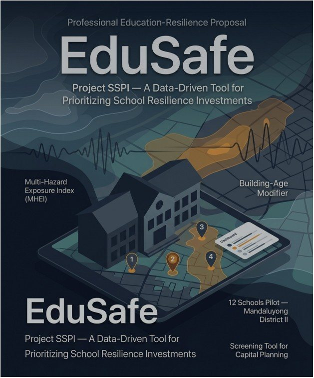
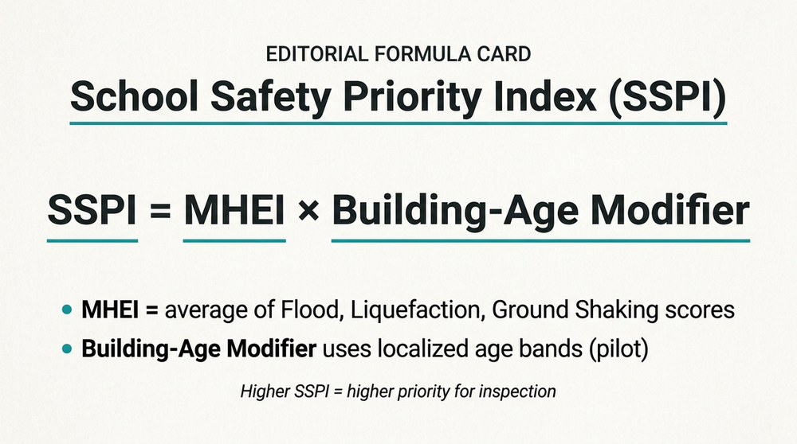
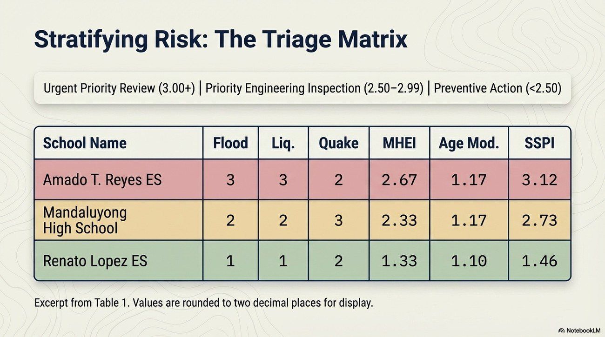

🏆 Top 10 · JA Philippines × J.P. Morgan Chase CareerConnect Capstone Finals
Part II · Infrastructure, Risk Mapping & Public Safety
Building to Last
Project SSPI: A Data-Driven Tool for Prioritizing School Resilience Investments in Mandaluyong
1.95–3.12
SSPI score range across 12 public schools — 2 urgent, 4 for engineering inspection, 6 preventive

At a Glance
Study site
Mandaluyong District II
Coverage
12 public basic-education schools
Score range
SSPI 1.95 to 3.12
Priority mix
2 urgent · 4 engineering · 6 preventive
Research Summary
Project SSPI was designed to help Mandaluyong decide which school sites should receive engineering attention first when public funds are limited. Rather than relying on fragmented reports, the study piloted a district-level triage system that combines multi-hazard exposure with building age to reflect both environmental intensity and probable structural vulnerability. The result is a transparent screening tool that helps the city rank campuses using a shared method before emergency damage forces reactive spending.
Objectives
- Create a standardized screening tool for prioritizing school-resilience investments.
- Combine flood, liquefaction, and ground-shaking exposure into a transparent hazard index.
- Integrate a building-age modifier as a proxy for structural vulnerability.
- Align triage categories with real LGU planning choices and historical disaster records.
Context & Method
The Philippines is one of the most hazard-prone settings in the region, yet school-maintenance decisions are often shaped by fragmented submissions rather than by a common risk metric. In Mandaluyong, this planning gap matters because schools serve a dual role: they are continuous learning spaces and potential evacuation centers. SSPI addresses this by turning public hazard data into a district-wide screening framework that can guide inspection, capital planning, and resilience financing before disaster losses accumulate.
- Coordinates for 12 public schools were validated through satellite imagery, on-site GPS pins, and the DepEd masterlist.
- Each school was processed through DOST-PHIVOLCS HazardHunterPH to obtain time-stamped hazard-assessment reports.
- Flood, liquefaction, and ground-shaking classes were converted into a fixed numeric scale and averaged into the Multi-Hazard Exposure Index (MHEI).
- A localized building-age modifier (1.00 to 1.17) was applied to derive the final SSPI triage score.


2Urgent Priority Review
4Priority Engineering Inspection
6Preventive Action & Monitoring
Key Findings
- Applying the formula to 12 schools produced SSPI scores ranging from 1.95 to 3.12.
- Two schools fell under Urgent Priority Review, four under Priority Engineering Inspection, and six under Preventive Action and Monitoring.
- Amado T. Reyes ES ranked highest in the sample extract at 3.12, indicating immediate review need.
- The pilot output aligned with District II DRRMC records, supporting the model’s face validity.
Implications & Recommended Actions
- Integrate SSPI into the annual LGU and school-infrastructure planning cycle.
- Standardize coordinate and building-age verification before computing scores.
- Use SSPI as a screening tool that triggers inspection, not as a final engineering verdict.
- Develop future systems integration with DepEd school-building inventory data.
12Schools screened
3.12Highest SSPI
1.00–1.17Age modifier
MHEIHazard index
“By combining multi-hazard exposure with a building-age modifier, SSPI gives Mandaluyong a transparent way to rank campuses before emergency repairs dictate the agenda.”
Research Adviser
Mr. Franklin D. Garvida
Student Researchers
Juliana Victoria M. Venoza, Trish Faith V. Quiroz, Jenecy A. Babula, Sheena Arsé G. Becera, Prince Joshua Dela Cruz
Keywords school-safety priority index; geospatial risk mapping; resilience planning; hazard exposure; building-age modifier; infrastructure financing